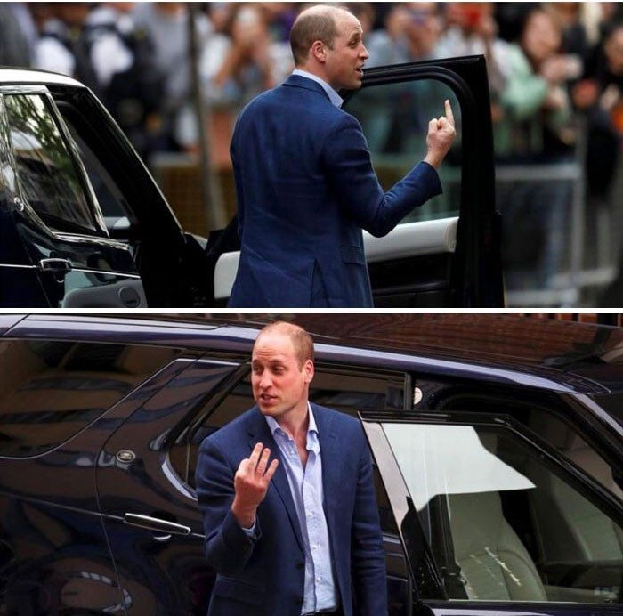

Critères pour Valider une Information
| Critère | Description |
|---|---|
| Fiabilité de la source | Vérifier la réputation et la crédibilité de la source. L'interlocuteur doit être une personne ou une entité reconnue et fiable. |
| Auteur identifié | L'information doit être attribuée à un auteur clairement identifié, pas à des sources anonymes ou vagues. |
| Concordance avec d'autres sources | Vérifier que plusieurs sources fiables rapportent la même information de manière cohérente. |
| Arguments factuels | L'information doit s'appuyer sur des preuves, des données vérifiables, pas seulement des opinions. |
| Absence de biais évident | Évaluer si la source a des intérêts financiers ou politiques qui pourraient biaiser son discours. |
| Contexte préservé | L'information est présentée avec son contexte complet, sans manipulation ou troncage. |
Biais de Cadrage
Il est tout à fait possible d'orienter l'information sans créer de Fake News :
- Ne présenter que les informations qui nous intéressent
- Supprimer le contexte d'une vidéo ou d'une photo
- Choisir un angle de présentation qui favorise une interprétation

Techniques de Désinformation
Astroturfing : Simulation d'un mouvement populaire pour influencer l'opinion publique.
Exemple : Créer de faux comptes sur les réseaux sociaux pour donner l'impression qu'une opinion est largement partagée.
Fabrique du doute : Technique utilisée pour semer la confusion et noyer le poisson sur des sujets spécifiques.
Exemple : Créer du doute sur le réchauffement climatique en opposant des « experts » non qualifiés, même quand le consensus scientifique est établi.
Mute News : Ne pas partager une information gênante ou inconfortable.
C'est une forme de censure passive : on ne censure pas, on ignore simplement l'information.
L'Intelligence Artificielle : Accélérateur de Désinformation
L'intelligence artificielle représente une rupture majeure dans la capacité à produire de la désinformation à grande échelle.
Deepfakes (vidéos manipulées)
- Il est désormais pratiquement impossible de distinguer à l'œil nu une photographie générée par IA d'une vraie photographie
- L'IA peut générer des vidéos convaincantes de personnalités publiques disant ou faisant des choses qu'elles n'ont jamais faites
Faux profils et comptes
- L'IA permet de générer automatiquement des profils crédibles (faux comptes dotés d'une identité, d'une histoire)
- Création de conversations et de commentaires automatisés qui semblent venir de vraies personnes
Stratégies de défense :
- Vérifier les sources : Toujours vérifier d'où vient une information
- Utiliser le fact-checking : Consulter des sites spécialisés qui vérifient les informations
- Activer l'esprit critique : Reconsidérer avant de partager
- Comprendre les mécanismes : Connaître les techniques de désinformation aide à les reconnaître
- Éduquer son réseau : Partager cette connaissance avec nos proches